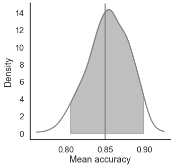
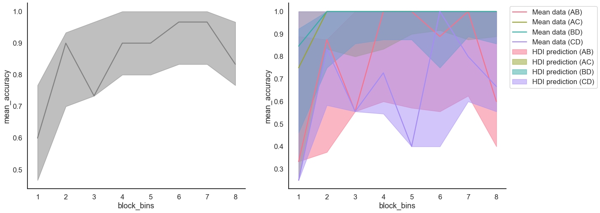

Fit a RL model on individual data
[1]:
from rlssm.utility.load_data import load_example_dataset
from rlssm.model.models_RL import RLModel_2A
import pandas as pd
Import individual data
[2]:
# import some example data:
data = load_example_dataset(hierarchical_levels = 1)
data.head()
[2]:
| participant | block_label | trial_block | f_cor | f_inc | cor_option | inc_option | times_seen | rt | accuracy | |
|---|---|---|---|---|---|---|---|---|---|---|
| 0 | 15 | 1 | 1 | 50 | 28 | 3 | 1 | 1 | 2.630658 | 1 |
| 1 | 15 | 1 | 2 | 52 | 44 | 3 | 1 | 2 | 2.718299 | 1 |
| 2 | 15 | 1 | 3 | 30 | 38 | 2 | 1 | 2 | 2.382882 | 1 |
| 3 | 15 | 1 | 4 | 64 | 45 | 4 | 2 | 1 | 2.167205 | 1 |
| 4 | 15 | 1 | 5 | 48 | 26 | 3 | 1 | 3 | 2.748257 | 0 |
Initialize the model
[3]:
# you can "turn on and off" different mechanisms:
model = RLModel_2A(hierarchical_levels = 1,
increasing_sensitivity = False,
separate_learning_rates = True)
15:10:57 - cmdstanpy - INFO - compiling stan file /home/andrei/PycharmProjects/rlssm/rlssm/stan_models/RL_2A/RL_2A_2lr.stan to exe file /home/andrei/PycharmProjects/rlssm/rlssm/stan_models/RL_2A/RL_2A_2lr
15:11:05 - cmdstanpy - INFO - compiled model executable: /home/andrei/PycharmProjects/rlssm/rlssm/stan_models/RL_2A/RL_2A_2lr
15:11:05 - cmdstanpy - WARNING - Stan compiler has produced 6 warnings:
15:11:05 - cmdstanpy - WARNING -
--- Translating Stan model to C++ code ---
bin/stanc --o=/home/andrei/PycharmProjects/rlssm/rlssm/stan_models/RL_2A/RL_2A_2lr.hpp /home/andrei/PycharmProjects/rlssm/rlssm/stan_models/RL_2A/RL_2A_2lr.stan
Warning in '/home/andrei/PycharmProjects/rlssm/rlssm/stan_models/RL_2A/RL_2A_2lr.stan', line 4, column 1: Declaration
of arrays by placing brackets after a variable name is deprecated and
will be removed in Stan 2.32.0. Instead use the array keyword before the
type. This can be changed automatically using the auto-format flag to
stanc
Warning in '/home/andrei/PycharmProjects/rlssm/rlssm/stan_models/RL_2A/RL_2A_2lr.stan', line 7, column 1: Declaration
of arrays by placing brackets after a variable name is deprecated and
will be removed in Stan 2.32.0. Instead use the array keyword before the
type. This can be changed automatically using the auto-format flag to
stanc
Warning in '/home/andrei/PycharmProjects/rlssm/rlssm/stan_models/RL_2A/RL_2A_2lr.stan', line 8, column 1: Declaration
of arrays by placing brackets after a variable name is deprecated and
will be removed in Stan 2.32.0. Instead use the array keyword before the
type. This can be changed automatically using the auto-format flag to
stanc
Warning in '/home/andrei/PycharmProjects/rlssm/rlssm/stan_models/RL_2A/RL_2A_2lr.stan', line 9, column 1: Declaration
of arrays by placing brackets after a variable name is deprecated and
will be removed in Stan 2.32.0. Instead use the array keyword before the
type. This can be changed automatically using the auto-format flag to
stanc
Warning in '/home/andrei/PycharmProjects/rlssm/rlssm/stan_models/RL_2A/RL_2A_2lr.stan', line 10, column 1: Declaration
of arrays by placing brackets after a variable name is deprecated and
will be removed in Stan 2.32.0. Instead use the array keyword before the
type. This can be changed automatically using the auto-format flag to
stanc
Warning in '/home/andrei/PycharmProjects/rlssm/rlssm/stan_models/RL_2A/RL_2A_2lr.stan', line 26, column 1: Declaration
of arrays by placing brackets after a variable name is deprecated and
will be removed in Stan 2.32.0. Instead use the array keyword before the
type. This can be changed automatically using the auto-format flag to
stanc
--- Compiling, linking C++ code ---
g++ -std=c++1y -pthread -D_REENTRANT -Wno-sign-compare -Wno-ignored-attributes -I stan/lib/stan_math/lib/tbb_2020.3/include -O3 -I src -I stan/src -I lib/rapidjson_1.1.0/ -I lib/CLI11-1.9.1/ -I stan/lib/stan_math/ -I stan/lib/stan_math/lib/eigen_3.3.9 -I stan/lib/stan_math/lib/boost_1.78.0 -I stan/lib/stan_math/lib/sundials_6.1.1/include -I stan/lib/stan_math/lib/sundials_6.1.1/src/sundials -DBOOST_DISABLE_ASSERTS -c -Wno-ignored-attributes -x c++ -o /home/andrei/PycharmProjects/rlssm/rlssm/stan_models/RL_2A/RL_2A_2lr.o /home/andrei/PycharmProjects/rlssm/rlssm/stan_models/RL_2A/RL_2A_2lr.hpp
g++ -std=c++1y -pthread -D_REENTRANT -Wno-sign-compare -Wno-ignored-attributes -I stan/lib/stan_math/lib/tbb_2020.3/include -O3 -I src -I stan/src -I lib/rapidjson_1.1.0/ -I lib/CLI11-1.9.1/ -I stan/lib/stan_math/ -I stan/lib/stan_math/lib/eigen_3.3.9 -I stan/lib/stan_math/lib/boost_1.78.0 -I stan/lib/stan_math/lib/sundials_6.1.1/include -I stan/lib/stan_math/lib/sundials_6.1.1/src/sundials -DBOOST_DISABLE_ASSERTS -Wl,-L,"/home/andrei/.cmdstan/cmdstan-2.30.0/stan/lib/stan_math/lib/tbb" -Wl,-rpath,"/home/andrei/.cmdstan/cmdstan-2.30.0/stan/lib/stan_math/lib/tbb" /home/andrei/PycharmProjects/rlssm/rlssm/stan_models/RL_2A/RL_2A_2lr.o src/cmdstan/main.o -Wl,-L,"/home/andrei/.cmdstan/cmdstan-2.30.0/stan/lib/stan_math/lib/tbb" -Wl,-rpath,"/home/andrei/.cmdstan/cmdstan-2.30.0/stan/lib/stan_math/lib/tbb" stan/lib/stan_math/lib/sundials_6.1.1/lib/libsundials_nvecserial.a stan/lib/stan_math/lib/sundials_6.1.1/lib/libsundials_cvodes.a stan/lib/stan_math/lib/sundials_6.1.1/lib/libsundials_idas.a stan/lib/stan_math/lib/sundials_6.1.1/lib/libsundials_kinsol.a stan/lib/stan_math/lib/tbb/libtbb.so.2 -o /home/andrei/PycharmProjects/rlssm/rlssm/stan_models/RL_2A/RL_2A_2lr
rm -f /home/andrei/PycharmProjects/rlssm/rlssm/stan_models/RL_2A/RL_2A_2lr.o
[4]:
model.priors
[4]:
{'sensitivity_priors': {'mu': 1, 'sd': 50},
'alpha_pos_priors': {'mu': 0, 'sd': 1},
'alpha_neg_priors': {'mu': 0, 'sd': 1}}
Fit
[5]:
# sampling parameters
n_warmup = 500
n_sampling = 2000
n_chains = 2
n_thin = 1
# learning parameters
K = 4 # n options in a learning block (participants see 2 at a time)
initial_value_learning = 27.5 # initial learning value (Q0)
[6]:
model_fit = model.fit(
data,
K,
initial_value_learning,
sensitivity_priors={'mu': 0, 'sd': 5},
thin = n_thin,
iter_warmup=n_warmup,
iter_sampling=n_sampling,
chains = n_chains)
15:11:05 - cmdstanpy - INFO - CmdStan start processing
Fitting the model using the priors:
sensitivity_priors {'mu': 0, 'sd': 5}
alpha_pos_priors {'mu': 0, 'sd': 1}
alpha_neg_priors {'mu': 0, 'sd': 1}
15:11:06 - cmdstanpy - INFO - CmdStan done processing.
15:11:06 - cmdstanpy - WARNING - Non-fatal error during sampling:
Exception: bernoulli_lpmf: Probability parameter[1] is -nan, but must be in the interval [0, 1] (in '/home/andrei/PycharmProjects/rlssm/rlssm/stan_models/RL_2A/RL_2A_2lr.stan', line 72, column 1 to column 36)
Consider re-running with show_console=True if the above output is unclear!
Checks MCMC diagnostics:
n_eff / iter looks reasonable for all parameters
0 of 4000 iterations saturated the maximum tree depth of 10 (0.0%)
E-BFMI indicated no pathological behavior
0.0 of 4000 iterations ended with a divergence (0.0%)
get Rhat
[7]:
model_fit.rhat
[7]:
| rhat | variable | |
|---|---|---|
| name | ||
| lp__ | 1.000020 | lp__ |
| alpha_pos | 0.999835 | alpha_pos |
| alpha_neg | 1.000770 | alpha_neg |
| sensitivity | 0.999913 | sensitivity |
| log_p_t[1] | NaN | log_p_t[1] |
| ... | ... | ... |
| log_lik[235] | 0.999834 | log_lik[235] |
| log_lik[236] | 0.999857 | log_lik[236] |
| log_lik[237] | 0.999838 | log_lik[237] |
| log_lik[238] | 0.999702 | log_lik[238] |
| log_lik[239] | 1.000370 | log_lik[239] |
492 rows × 2 columns
get wAIC
[8]:
model_fit.waic
[8]:
{'lppd': -75.48875619791505,
'p_waic': 2.60430602430708,
'waic': 156.18612444444426,
'waic_se': 17.113938998620164}
Posteriors
[9]:
model_fit.samples.describe()
[9]:
| transf_alpha_pos | transf_alpha_neg | transf_sensitivity | |
|---|---|---|---|
| count | 4000.000000 | 4000.000000 | 4000.000000 |
| mean | 0.133288 | 0.358379 | 0.362473 |
| std | 0.047736 | 0.134856 | 0.058300 |
| min | 0.014110 | 0.054714 | 0.212198 |
| 25% | 0.100332 | 0.260266 | 0.322085 |
| 50% | 0.126734 | 0.345488 | 0.357639 |
| 75% | 0.157665 | 0.442098 | 0.395848 |
| max | 0.490280 | 0.924686 | 0.866057 |
[10]:
import seaborn as sns
sns.set(context = "talk",
style = "white",
palette = "husl",
rc={'figure.figsize':(15, 8)})
[11]:
model_fit.plot_posteriors(height=5, show_intervals="HDI", alpha_intervals=.05);
Posterior predictives
Ungrouped
[12]:
pp = model_fit.get_posterior_predictives_df(n_posterior_predictives=1000)
pp
[12]:
| variable | accuracy | ||||||||||||||||||||
|---|---|---|---|---|---|---|---|---|---|---|---|---|---|---|---|---|---|---|---|---|---|
| trial | 1 | 2 | 3 | 4 | 5 | 6 | 7 | 8 | 9 | 10 | ... | 230 | 231 | 232 | 233 | 234 | 235 | 236 | 237 | 238 | 239 |
| sample | |||||||||||||||||||||
| 1 | 0 | 1 | 0 | 1 | 0 | 0 | 0 | 0 | 1 | 1 | ... | 1 | 0 | 1 | 0 | 1 | 1 | 1 | 1 | 1 | 1 |
| 2 | 1 | 1 | 0 | 0 | 1 | 1 | 1 | 1 | 1 | 1 | ... | 1 | 1 | 1 | 1 | 1 | 1 | 1 | 1 | 1 | 1 |
| 3 | 1 | 0 | 1 | 1 | 1 | 0 | 1 | 0 | 1 | 1 | ... | 1 | 1 | 1 | 0 | 1 | 1 | 1 | 1 | 1 | 1 |
| 4 | 1 | 1 | 1 | 0 | 1 | 0 | 1 | 0 | 1 | 1 | ... | 1 | 1 | 1 | 0 | 1 | 1 | 0 | 1 | 1 | 1 |
| 5 | 0 | 1 | 1 | 1 | 1 | 0 | 1 | 1 | 1 | 1 | ... | 0 | 0 | 1 | 0 | 1 | 1 | 1 | 1 | 1 | 1 |
| ... | ... | ... | ... | ... | ... | ... | ... | ... | ... | ... | ... | ... | ... | ... | ... | ... | ... | ... | ... | ... | ... |
| 996 | 0 | 1 | 1 | 1 | 0 | 0 | 1 | 1 | 1 | 1 | ... | 0 | 1 | 1 | 1 | 1 | 1 | 0 | 1 | 1 | 1 |
| 997 | 1 | 1 | 0 | 0 | 0 | 0 | 0 | 0 | 1 | 1 | ... | 0 | 1 | 1 | 1 | 1 | 1 | 1 | 0 | 1 | 1 |
| 998 | 0 | 1 | 0 | 1 | 0 | 0 | 0 | 1 | 1 | 1 | ... | 1 | 0 | 1 | 1 | 1 | 1 | 1 | 1 | 1 | 1 |
| 999 | 1 | 1 | 0 | 1 | 1 | 1 | 1 | 0 | 1 | 1 | ... | 1 | 1 | 1 | 1 | 1 | 1 | 1 | 1 | 1 | 1 |
| 1000 | 0 | 1 | 0 | 1 | 1 | 0 | 0 | 1 | 1 | 1 | ... | 1 | 1 | 1 | 1 | 1 | 1 | 1 | 1 | 1 | 1 |
1000 rows × 239 columns
[13]:
pp_summary = model_fit.get_posterior_predictives_summary(n_posterior_predictives=1000)
pp_summary
[13]:
| mean_accuracy | |
|---|---|
| sample | |
| 1 | 0.853556 |
| 2 | 0.866109 |
| 3 | 0.807531 |
| 4 | 0.857741 |
| 5 | 0.832636 |
| ... | ... |
| 996 | 0.815900 |
| 997 | 0.845188 |
| 998 | 0.891213 |
| 999 | 0.874477 |
| 1000 | 0.882845 |
1000 rows × 1 columns
[14]:
import matplotlib.pyplot as plt
fig, ax = plt.subplots(1, 1, figsize=(5, 5))
model_fit.plot_mean_posterior_predictives(n_posterior_predictives=500, ax=ax, show_intervals='HDI')
ax.set_ylabel('Density')
ax.set_xlabel('Mean accuracy')
sns.despine()

Grouped
[15]:
import numpy as np
[16]:
# Define new grouping variables, in this case, for the different choice pairs, but any grouping var can do
data['choice_pair'] = 'AB'
data.loc[(data.cor_option == 3) & (data.inc_option == 1), 'choice_pair'] = 'AC'
data.loc[(data.cor_option == 4) & (data.inc_option == 2), 'choice_pair'] = 'BD'
data.loc[(data.cor_option == 4) & (data.inc_option == 3), 'choice_pair'] = 'CD'
data['block_bins'] = pd.cut(data.trial_block, 8, labels=np.arange(1, 9))
[17]:
model_fit.get_grouped_posterior_predictives_summary(grouping_vars=['block_label', 'block_bins', 'choice_pair'],
n_posterior_predictives=500)
[17]:
| mean_accuracy | ||||
|---|---|---|---|---|
| block_label | block_bins | choice_pair | sample | |
| 1 | 1 | AB | 1 | 0.50 |
| 2 | 0.50 | |||
| 3 | 0.00 | |||
| 4 | 1.00 | |||
| 5 | 0.50 | |||
| ... | ... | ... | ... | ... |
| 3 | 8 | CD | 496 | 0.75 |
| 497 | 0.75 | |||
| 498 | 0.75 | |||
| 499 | 0.75 | |||
| 500 | 0.75 |
46000 rows × 1 columns
[18]:
import matplotlib.pyplot as plt
fig, axes = plt.subplots(1, 2, figsize=(20,8))
model_fit.plot_mean_grouped_posterior_predictives(grouping_vars=['block_bins'], n_posterior_predictives=500, ax=axes[0])
model_fit.plot_mean_grouped_posterior_predictives(grouping_vars=['block_bins', 'choice_pair'], n_posterior_predictives=500, ax=axes[1])
sns.despine()
